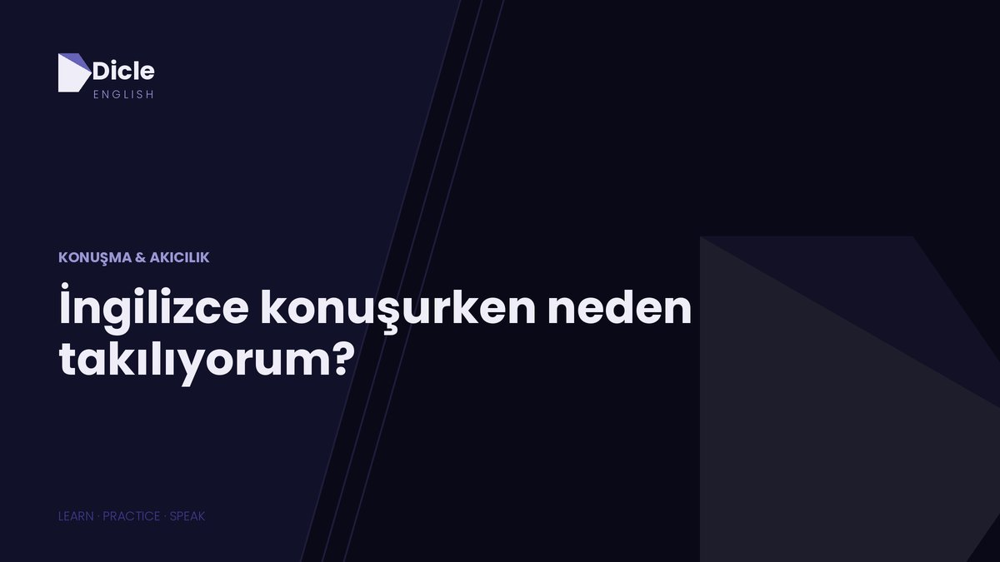

İngilizce konuşurken takılmanın en yaygın sebebi kelime bilmemek değil, cümleyi Türkçe kurup İngilizceye çevirmeye çalışmak. Türkçede fiil cümlenin sonundadır, İngilizcede ise başa yakındır. Yani çeviri yaparken cümlenin tamamını kafanda tutup baştan sona ters çevirmen gerekir. Beyin bunu yapamaz, sen de ilk kelimede donarsın.
Bunu çözmenin yolu daha çok kelime ezberlemek değil. Bildiğin kelimelerle cümleye nasıl başlayacağını öğrenmek.
Aşağıda bu takılmanın gerçek sebeplerini ve her biri için deneyebileceğin somut bir çözümü bulacaksın.
Takılmak başarısızlık değil, yanlış yerde takılmak sorun
Şunu baştan söyleyelim: anadili İngilizce olan insanlar da konuşurken takılır. Duraklar, düşünür, kelime arar. Aradaki fark şu:
Onlar İngilizce takılır. Sen sessiz kalırsın.
Onlar “um”, “well”, “how can I put it” der ve düşünme süresini satın alır. Sen ise doğru kelimeyi bulana kadar susarsın, karşı taraf sessizliği “anlamadı” diye okur, sen utanırsın, bir daha konuşmak istemezsin.
Yani hedef takılmamak değil. Hedef, takıldığın anı İngilizce yönetebilmek.
Takılmanın 5 gerçek sebebi
1. Kafanda çeviri yapıyorsun
Şu cümleyi düşün:
Türkçede sıra şöyle: zaman, kişi, yer, fiil. Fiil en sonda. İngilizcede aynı cümle şöyle:
Fiil ikinci sırada. Yani Türkçe düşünüp çeviriyorsan, konuşmaya başlamadan önce cümlenin sonunu bilmek zorundasın. Bu yüzden ağzını açmadan önce üç saniye bekliyorsun.
Aynı sorun soru cümlelerinde daha da net:
- gidebilir miyim → Can I go
- ne yaptığını bilmiyorum → I don’t know what you did
Türkçede anlamı taşıyan ekler sona eklenir, İngilizcede ise yardımcı kelimeler öne gelir. Türkçe düşündüğün sürece her cümlede bu takla atmayı yapmak zorunda kalırsın.
2. Konuşurken aynı anda gramer kontrolü yapıyorsun
Cümleye başlıyorsun: “I have go... yok, I went...” Derken düzeltmeyle uğraşırken söylemek istediğin şeyi unutuyorsun.
Bunun bir adı var: konuşurken içindeki gramer denetçisini fazla çalıştırmak. Doğruluk ve akıcılık aynı anda çalışmaz. Yazarken denetçi açık olmalı, konuşurken kısık olmalı.
3. Kelimeleri tanıyorsun ama kullanmıyorsun
İki tür kelime dağarcığın var: tanıdıkların ve kullandıkların. Bir metinde “reluctant” görünce anlarsın ama konuşurken aklına asla gelmez. Çoğu insanda tanıdık kelime sayısı, kullandığı kelime sayısının üç dört katıdır.
Yani sorun kelime eksikliği değil, uyuyan kelimeler. Yeni kelime ezberlemek bu boşluğu büyütür, kapatmaz.
4. Yıllardır sadece input alıyorsun
Dizi izliyorsun, podcast dinliyorsun, kitap okuyorsun. Hepsi çok değerli ama hiçbiri konuşma pratiği değil.
Anlamak ve üretmek iki ayrı beceri. Yüzme videosu izleyerek yüzmeyi öğrenemezsin. Suya girmen gerekir ve ilk girdiğinde çirkin yüzeceksin. Normal.
5. Hata yapma korkusu kaslarını kilitliyor
Türkiye’de İngilizce eğitimi uzun yıllar test üzerinden verildi. Hata yapmak puan kaybıydı. Bu yüzden pek çok insanın kafasında İngilizce konuşmak, sohbet etmek değil, sınav olmak gibi hissettiriyor.
Karşındaki kişi seni değerlendirmiyor. Sadece ne demek istediğini anlamaya çalışıyor.
Çözümler: bugün deneyebileceğin 6 teknik
1. Cümleye fiille başla, detayı sonra ekle
İngilizcenin en güzel özelliği şu: cümleyi başlattıktan sonra sonuna istediğin kadar ekleme yapabilirsin.
I went to the cinema...
I went to the cinema with my friend...
I went to the cinema with my friend last night...
I went to the cinema with my friend last night because we were bored.
Türkçede bunu yapamazsın, fiili sona koymak zorundasın. İngilizcede yapabilirsin. Bu senin en büyük avantajın.
Bugün şunu dene: on cümle kur ve her birinde önce sadece özne ve fiili söyle. Gerisini konuşurken bul.
Cümle başlatıcı olarak ezberleyeceğin beş kalıp:
- I think...
- I was going to...
- The thing is...
- What I mean is...
- It depends on...
2. Kelime değil, kalıp ezberle
Anadili İngilizce olanlar cümleleri kelime kelime kurmaz. Hazır blokları birleştirir.
- Ne demek istediğimi anlıyor musun → You know what I mean?
- Acaba şey mi diyordum → I was wondering if...
- Öyle bir şey işte → Something like that.
- Bana kalırsa → If you ask me...
- Uzun lafın kısası → Long story short...
Bunları kelime kelime çözmeye çalışma. Tek bir kelime gibi ezberle ve ağzından tek parça çıksın. Haftada beş kalıp, altı ayda yüz yirmi kalıp eder. Bu, konuşmanın iskeletidir.
3. Kelimeyi bulamayınca tarif et
En kritik beceri bu ve kimse öğretmiyor. Kelime aklına gelmediğinde susmak yerine anlatırsın.
- “musluk” gelmiyorsa → the thing in the kitchen where water comes out
- “kürek” gelmiyorsa → the tool you use to move snow
- “kira kontratı” gelmiyorsa → the paper you sign when you rent a house
Karşındaki insan yüzde doksan ihtimalle kelimeyi senin için söyler: “Oh, the tap?” Hem iletişim kopmaz hem kelimeyi öğrenirsin.
Bugünkü egzersizin: odandaki beş eşyayı ismini söylemeden İngilizce tarif et.
4. Sessizliği İngilizce doldur
Düşünmek için zamana ihtiyacın olduğunda Türkçe “yani” demek yerine şunları kullan:
- Let me think for a second.
- How can I put it...
- What’s the word...
- It’s on the tip of my tongue.
- That’s a good question.
Bunlar boş laf değil. Sana iki üç saniye kazandırır ve o sürede karşı taraf senin düşündüğünü görür, donduğunu değil.
5. Doğruluk pratiğiyle akıcılık pratiğini ayır
İkisini aynı seansta yapma.
Akıcılık için: iki dakika boyunca durmadan konuş, hata düzeltme, geri dönme. Amaç sadece durmamak.
Doğruluk için: konuştuğunu yaz veya kaydını dinle, sonra hataları sakin sakin düzelt.
Beyin ikisini aynı anda yapamıyor. Ayırdığında ikisi de hızlanıyor.
6. Kendi kendine konuş, ama yüksek sesle
Sessiz kafa içi İngilizce pratik sayılmaz çünkü dil kaslarını çalıştırmaz. Yüksek sesle konuşmak gerekiyor.
Günde iki dakika, telefonuna kayıt yaparak, o gün ne yaptığını anlat. İlk hafta korkunç olacak. Üçüncü haftada birinci haftanın kaydını dinlediğinde farkı sen duyacaksın.
7 günlük mini plan
Günde on beş dakika yeterli.
| Gün | Ne yapacaksın |
|---|---|
| 1 | Telefona 2 dakikalık kayıt: bugün ne yaptın |
| 2 | 5 dakika shadowing: bir videoyu eş zamanlı tekrarla |
| 3 | 10 cümleyi özne ve fiille başlatma alıştırması |
| 4 | 5 eşyayı ismini söylemeden tarif et |
| 5 | Düşünme kalıplarını sesli tekrarla ve cümle içinde kullan |
| 6 | Haftanın 5 kalıbını farklı cümlelerde 5 kez kullan |
| 7 | 1. günün kaydını dinle, aynı konuyu yeniden anlat |
Yedinci gün çok önemli. İlerlemeyi ölçemezsen devam etmezsin.
Sık sorulan sorular
Günlük sohbetin büyük kısmı yaklaşık 800 ila 1000 aktif kelimeyle döner. Muhtemelen bu kelimeleri zaten biliyorsun. Sorun kelime sayısı değil, o kelimelere ne kadar hızlı ulaşabildiğin.
Hayır. Aksan anlaşılırlığı çok az etkiler, akıcılığı ise hiç etkilemez. Vurguyu yanlış yere koymak anlaşılırlığı aksandan çok daha fazla etkiler. Aksanını değil, vurgunu çalış.
Evet, çünkü takılmanın sebebi karşındaki insan değil, kelimeye ulaşma hızın. Bu hız yalnızken de artar. Konuşma partneri bulmak elbette daha iyi ama şart değil.
Düzenli çalışırsan ilk gözle görülür fark üç dört haftada gelir. Bu fark genelde şudur: cümleye başlamadan önceki bekleme süren kısalır.
Son olarak
İngilizce konuşurken takılıyorsan bu, dil yeteneğin olmadığı anlamına gelmiyor. Yıllarca sana dilin bir bilgi konusu olduğu öğretildi, oysa konuşmak bir beceri. Bilgi çalışmayla gelir, beceri tekrarla.
Bugün sadece bir tanesini dene: iki dakikalık kayıt. En zoru ilk kayıt.
Dilim Tutuldu
Konuşma çekingenliğini daha derinlemesine ele aldığım ücretsiz e-kitabımı indir ve takılmadan konuşmaya bugün başla.
E-kitabı İndir →